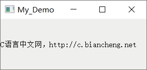
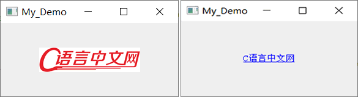
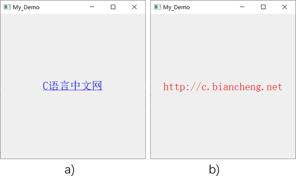

首页 > 编程笔记
Qt QLabel文本框的使用
QLabel 是 Qt 帮我们写好的一个控件类，间接继承自 QWidget 类，它的继承关系如下：
除了显示一串文本外，QLabel 控件上还可以放置图片、超链接、动画等内容。例如：
本质上，每个文本框都是 QLabel 类的一个实例对象。QLabel 类提供了两个构造函数，分别是：
需要注意的是，第一个构造函数中的 parent 和 f 参数都有默认值，因此 QLabel 类还隐含了一个默认构造函数。也就是说，创建 QLable 对象时可以不传递任何参数，或者只给 txt 参数传递一个字符串，就可以成功创建一个文本框。通常情况下，我们会给 text 和 parent 参数传递相应的值，即在创建文本框的同时指定文本内容和父窗口。
除了上表中提到了获取和修改属性值得成员方法外，下表给大家罗列了一些常用的操作 QLabel 控件的成员方法，它们有些定义在 QLabel 类内，有些是通过继承父类得到的：
QLabel 控件提供了很多槽函数，如下表所示：
除了表 2、3 罗列的这些信号和槽函数外，QLabel 类还从父类处继承了一些信号和槽函数，这里不再一一罗列。
QLabel -> QFrame -> QWidget
从字面上理解，QLabel 可以解释为“Qt 的 Label”，即 Qt 提供给我们的一种文本控件，它的基础功能是显示一串文本。例如，下图就是一个普通的文本框：

图 1 QLabel控件
图 1 QLabel控件
除了显示一串文本外，QLabel 控件上还可以放置图片、超链接、动画等内容。例如：

图 2 QLabel放置图片和超链接文字
图 2 QLabel放置图片和超链接文字
本质上，每个文本框都是 QLabel 类的一个实例对象。QLabel 类提供了两个构造函数，分别是：
QLabel(QWidget *parent = Q_NULLPTR, Qt::WindowFlags f = Qt::WindowFlags())
QLabel(const QString &text, QWidget *parent = Q_NULLPTR, Qt::WindowFlags f = Qt::WindowFlags())
- text 参数用于指定文本框中显示的文字；
- parent 参数用于指定文本框的父窗口；
- WindowFlags 是一种枚举类型，f 参数用来设置文本框的一些系统属性和外观属性，默认值为 Qt::Widget，表示当不指定父窗口时，文本框将作为一个独立窗口（如图 1、2 所示），反之则作为父窗口中的一个控件。f 参数的可选值有很多，比如 Qt::Window 表示文本框将作为一个独立的窗口，它自带边框和标题栏，Qt::ToolTip 表示文本框将作为一个提示窗口，不带边框和标题栏等等，这里不再一一列举。
需要注意的是，第一个构造函数中的 parent 和 f 参数都有默认值，因此 QLabel 类还隐含了一个默认构造函数。也就是说，创建 QLable 对象时可以不传递任何参数，或者只给 txt 参数传递一个字符串，就可以成功创建一个文本框。通常情况下，我们会给 text 和 parent 参数传递相应的值，即在创建文本框的同时指定文本内容和父窗口。
QLabel文本框的使用
QLabel 类本身提供有很多属性和方法，它还从父类继承了很多属性和方法。下表给大家罗列了 QLabel 类常用的一些属性和方法：| 属 性 | 含 义 |
|---|---|
| alignment |
保存 QLabel 控件中内容的对齐方式，默认情况下，QLabel 控件中的内容保持左对齐和垂直居中。 该属性的值可以通过调用 alignment() 方法获得，可以借助 setAlignment() 方法修改。 |
| text |
保存 QLabel 控件中的文本，如果 QLabel 控件中没有文本，则 text 的值为空字符串， 该属性的值可以通过 text() 方法获得，可以借助 setText() 方法修改。 |
| pixmap |
保存 QLabel 控件内显示的图片，如果控件内没有设置图片，pixmap 的值为 0。 该属性的值可以通过调用 pixmap() 方法获得，可以借助 setPixmap() 方法修改。 |
| selectedText |
保存 QLabel 控件中被选择了的文本，当没有文本被选择时，selectedText 的值为空字符串。 该属性的值可以通过调用 selectedText() 方法获得。 |
| hasSelectedText | 判断用户是否选择了 QLabel 控件内的部分文本，如果是则返回 true，反之则返回 false。默认情况下，该属性的值为 false。 |
| indent |
保存 QLabel 控件内文本的缩进量，文本的缩进方向和 alignment 属性的值有关。 该属性的值可以通过调用 indent() 方法获得，可以借助 setIndent() 方法修改。 |
| margin |
保存 QLabel 控件中内容与边框之间的距离（边距），margin 的默认值为 0。 该属性的值可以通过调用 margin() 方法获得，可以借助 setMargin() 方法修改。 |
| wordWrap |
保存 QLabel 控件内文本的换行策略。当该属性的值为 true 时，控件内的文本会在必要时自动换行。默认情况下，控件内的文本是禁止自动换行的。 该属性的值可以通过 wordWrap() 方法获得，可以借助 setWordWrap() 方法修改。 |
除了上表中提到了获取和修改属性值得成员方法外，下表给大家罗列了一些常用的操作 QLabel 控件的成员方法，它们有些定义在 QLabel 类内，有些是通过继承父类得到的：
| 成员方法 | 功 能 |
|---|---|
| hide() | 隐藏文本框。 |
| clear() | 清空 QLabel 控件内所有显示的内容。 |
| setToolTip(QString) | 设置信息提示，当用户的鼠标放在QLabel 文本框上时会自动跳出文字。 |
| setToolTipDuration(int) | 设置提示信息出现的时间，单位是毫秒。 |
| setStyleSheet(QString) | 设置 QLabel 文本框的样式。 |
| setGeometry(int x, int y, int w, int h) | 设置 QLabel 文本框的位置 (x, y) 以及尺寸 (w, h)。 |
QLabel文本框的信号和槽
QLabel 控件只用来显示文本、图像等内容，很好与用户交互。但是，当 QLabel 控件内包含超链接内容时，可以使用 QLabel 类提供的两个信号函数：| 信号函数 | 功 能 |
|---|---|
| linkActivated(const QString &link) | 用户点击超链接时触发，link 参数用于向槽函数传输超链接的 URL。 |
| linkHovered(const QString &link) | 用户的鼠标悬停到超链接位置时触发，link 参数用于向槽函数传输超链接的 URL。 |
QLabel 控件提供了很多槽函数，如下表所示：
| 槽函数 | 功 能 |
|---|---|
| clear() | 清空 QLabel 控件内所有的内容。 |
| setMovie(QMovie *movie) | 清空 QLabel 控件内所有的内容，改为显示指定的 movie 动画。 |
| setNum(int num) | 清空 QLabel 控件内所有的内容，改为显示 num 整数的值。 |
| setNum(double num) | 清空 QLabel 控件内所有的内容，改为显示 num 小数的值。 |
| setPicture(const QPicture &picture) | 清空 QLabel 控件内所有的内容，改为显示经 QPicture 类处理的图像。 |
| setPixmap(const QPixmap &) | 清空 QLabel 控件内所有的内容，改为显示经 QPixmap 类处理的图像。 |
| setText(const QString &) | 清空 QLabel 控件内所有的内容，改为显示指定的文本。 |
除了表 2、3 罗列的这些信号和槽函数外，QLabel 类还从父类处继承了一些信号和槽函数，这里不再一一罗列。
实例演示QLabel文本框的用法
接下来通过一个实例，给大家演示 QLabel 控件中一些属性和方法的用法。
#include <QApplication>
#include <QLabel>
int main(int argc, char *argv[])
{
QApplication a(argc, argv);
//创建一个文本框
QLabel lab;
//设置文本框内容居中显示
lab.setAlignment(Qt::AlignCenter);
//设置文本框的坐标和尺寸
lab.setGeometry(100,100,400,400);
//设置文本框的外观，包括字体的大小和颜色、按钮的背景色
lab.setStyleSheet("QLabel{font:30px;color:red;background-color:rgb(f9,f9,f9);}");
//设置文本框要显示超链接内容
lab.setText("<a href=\"http://c.biancheng.net\">C语言中文网");
//当用户鼠标位于文本框上时，显示提示内容
lab.setToolTip("点击超链接显示URL");
//提示内容显示 1 秒
lab.setToolTipDuration(1000);
//为文本框设置信号和槽，当用户点击超链接时，将文本框内容改为超链接的 URL
QObject::connect(&lab,&QLabel::linkActivated,&lab,&QLabel::setText);
//程序运行后，文本框显示
lab.show();
return a.exec();
}
执行结果如下图所示，用户最先看到的是图 3a)，当用户鼠标移动到文本框区域内时，会提示“点击超链接显示URL”，提示时间为 1 秒。当用户点击“C语言中文网”时会触发 linkActivated() 信号函数，该函数会调用 setText() 函数，将文本框中显示的“C语言中文网”改为“http://c.biancheng.net”，字体颜色为红色，如图 3b) 所示。

图 3 程序运行结果
有关 QLabel 类提供的更多属性和方法，后续章节用到时会做详细地讲解，您也可以借助 Qt Creator 提供的 Qt 帮助手册自行查看 QLabel 类提供的成员。
关注公众号「站长严长生」，在手机上阅读所有教程，随时随地都能学习。内含一款搜索神器，免费下载全网书籍和视频。

微信扫码关注公众号